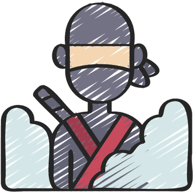

Duldord
Eitt dult ord på fem bokstavar kvar dag, og seks freistnader på å finne det. Grøn rute tyder rett bokstav på rett plass, gul tyder rett bokstav på feil plass.

Eitt dult ord på fem bokstavar kvar dag, og seks freistnader på å finne det. Grøn rute tyder rett bokstav på rett plass, gul tyder rett bokstav på feil plass.